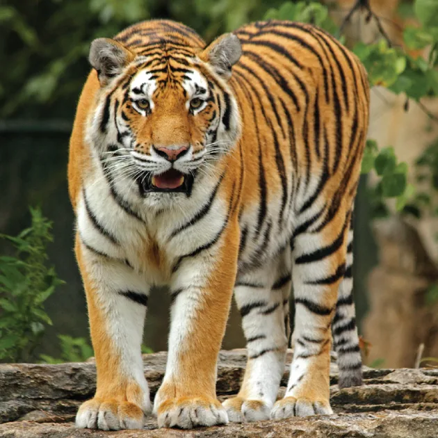

Rotate around the X axis
rotateX(30deg)
Hover over an image to tilt it in 3D. Move away to reset.

Rotate around the X axis
rotateX(30deg)
Reverse the X-axis tilt
rotateX(-30deg)
Rotate around the Y axis
rotateY(30deg)
Reverse the Y-axis tilt
rotateY(-30deg)